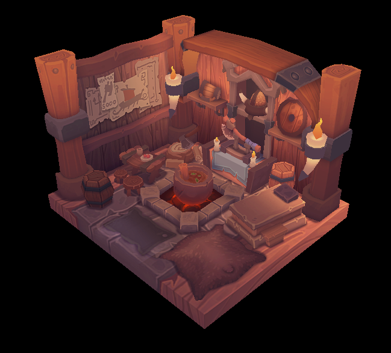
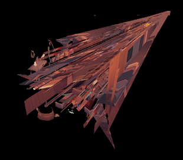
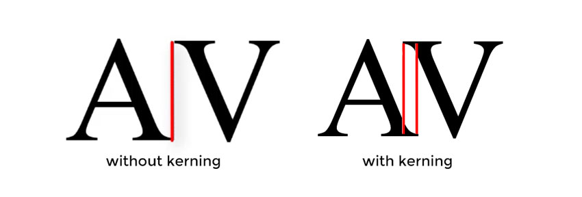

Unnamed Project
This project is currently in the very early stages of development. It will be set in space in the far flung future. The details are a mystery, even to us.
Development Log
Below is a log of our progress so far. Enjoy.Log 0 — Getting Started
Hi reader, welcome to the development log. This "unnamed project"1 is going to be a sandbox factory building game, set in space. Currently, the team consists of 3 programmers. All of us are finishing up our last year of university, with the hope being that we'll be able to put significant hours into the project in the coming months. Our hope is to have something playable by August, but beyond that it doesn't seem appropriate to make predictions about timeline.
There'll be a lot of technical details to talk about as this project progresses, so I'm just going to jump right in. Initially, we were developing a small prototype of the game in Unity. However, we were constantly running into problems with the garbage collector and just generally feeling hampered by an interface we don't have control over. So, inspired partially by Casey Muratori's wonderful Handmade Hero series, we're going to create our own engine. Oh the hubris! As anyone on the net will tell you, making your own engine is a horrible terrible idea that will always end in disaster. Maybe they're right, but the truth it's just way more fun. We're trying to minimize our use of external libraries, and maintain ownership over as much of the code as possible. The code for the library itself will be public2, so if you want to take a look at the code head over to the GitHub for it. It's called Plover because we like shore birds and are tired of programming projects called things like "Neutronium."3
Because the game will be 3D, we needed to pick which graphics hardware API to use. I personally had some familiarity with OpenGL, but wanted to use something with a more modern API. Our options were between DX12, Metal, and Vulkan. We ended up going with Vulkan, because we want to target Windows, Mac, and Linux, and don't want to have to port all of our graphics code between systems. Initially we were a bit scared by Vulkan, as it has a reputation for being very complex, but frankly with some basic graphics programming experience it's not too hard to get to grips with, it's just significantly more verbose than OpenGL. To get the renderer up and running, I went through the Vulkan tutorial, which is really high quality. We can now render this beautiful viking room test model thing:
I have no doubt that you're exceedingly impressed by it. Initially, Yiğit and I tried implementing our own memory allocator4. Unfortunately, that ended up something like this:
This was less than desirable, as you might imagine, and so we've now switched to using the header lib Vulkan Memory Allocator, which works fine for the time being. Memory allocation on the GPU may be something we come back when doing optimization later on.
Once this was finished, I went ahead and implemented font rendering, using the Freetype library as a base. Once we get around to writing an asset loader, we will probably pre-rasterize the fonts when building the asset file(s?), but for now the glyphs get written into a bitmap texture on the CPU, then get uploaded onto the GPU for rendering. This required adding a subpass to our renderpass for rendering UI, which was my first real step outside of the comfort of the tutorials.
The main snag with text rendering was getting kerning working. Kerning is how typographers define how individual pairs of glyphs should be spaced, as shown in this image I stole:
Freetype supports kerning, but unfortunately only via the TrueType kern table. The font I wanted to use does not have this table, instead it has the OpenType GPOS table. To read this table, the renderer now reads in the binary data, and extracts the kerning information for each pair of glyphs. While the GPOS table supports a huge amount of features, I've only implemented horizontal kerning, as I'm only rendering latin text.
The last interesting bit of the engine to discuss5 is the way we're going to handle memory. Most modern C/C++ game engines use a ton of news and deletes to allocate memory for whatever they need. Instead, taking after Handmade Hero, we're going to have the engine provide the game with a flat memory partition that it can do whatever it wants in, and not have any sort of memory allocation in the game code. This has a few benefits. The first is that we can guarantee that if a given has enough memory to allocate the flat partition, our game will run on it, eliminating a whole class of errors. The second is that we won't be taking the performance hit of calling the operating system every frame to get new memory. Finally, we can also hot swap the game code6 trivially. While this is a pretty unorthodox approach to memory nowadays, I think it'll be interesting to see how it pays off.
This log is rather long, as it encompases a couple months of off and on work. Sorry about that. Our hope is that logs will be written weekly, but we'll see if that actually happens :).
— Oliver
Notes
1. We call it ProjectG internally
2. I haven't decided on the license, but probably something something permissive like MIT.
3. Sorry if that's the name of your project.
4. For fun. Obviously.
5. So far, we hope.
6. Which is just a shared library with an exported function that runs each frame of the game loop.